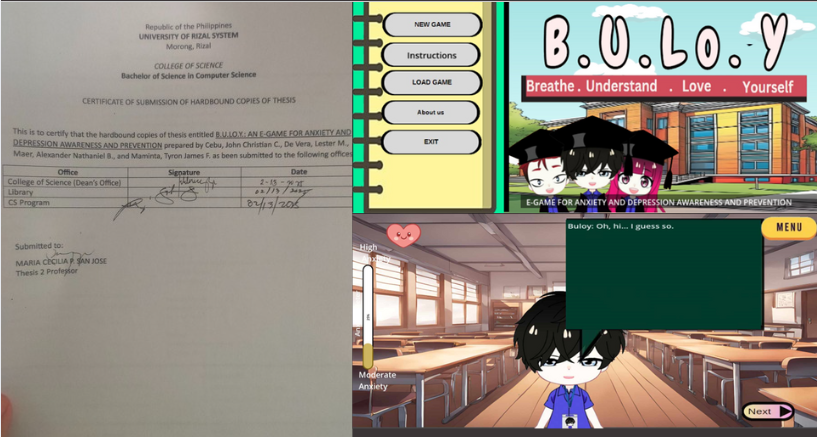

Thesis Project: B.U.Lo.Y.: An E-Game for Anxiety and Depression Awareness and Prevention
This game was developed as a thesis project to help raise awareness about anxiety and depression. B.U.Lo.Y. is designed to educate players on the signs, symptoms, and preventive strategies for mental health conditions through an engaging and interactive platform. The aim is to provide support and knowledge in a format that is accessible and enjoyable, especially for younger audiences.
URS Records Unit Tracking System
This project involved the development of a web-based tracking system for the Records Unit of the University of Rizal System. The system allows staff and administrators to manage and monitor the status of documents efficiently, reducing delays and improving transparency in document handling and processing within the university.